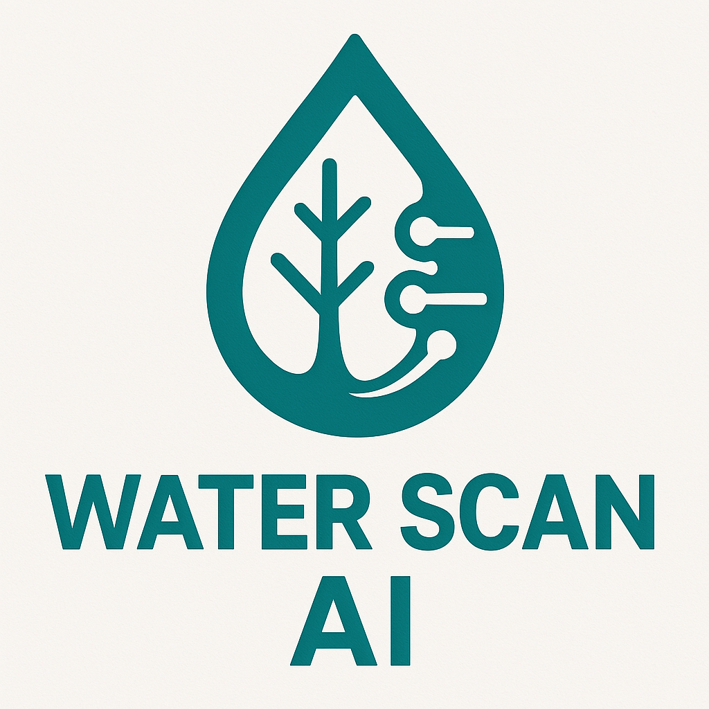

Water Scan AI
💧 Water Scan AI is a Machine Learning project that classifies water potability using preprocessing techniques, class balancing, hyperparameter optimization, and model versioning with MLflow.
- Project Name:
water_scan_ai - Author:
tralencar - Version: "1.0.1"
- License:
MIT - Keywords:
quality,water - Data Source: Dataset (Water Quality) from Kaggle.
🔹 Visual Identity of the Water Scan AI logo
The Water Scan AI logo is more than just a visual representation; it encapsulates the project’s core mission of leveraging artificial intelligence to ensure water potability. As a brand, it conveys trust, innovation, and environmental responsibility, positioning the solution as a cutting-edge tool for water quality analysis and management. The logo effectively combines elements of technology and sustainability, emphasizing the project’s commitment to solving global water challenges while ensuring the accuracy and reliability of its data-driven insights.

1. Simplicity and Clear Connection with Water
The central water droplet icon is universally recognized, instantly communicating the focus of the project on water potability. This symbol serves as a direct representation of the project’s mission to ensure access to safe drinking water.
- Blue color: Evokes freshness, purity, and trust, aligning with the values of sustainability and technological advancement. It represents stability and reliability, key factors for a project handling critical environmental data.
2. Geometric and Modern Lines: Representing Artificial Intelligence
The geometric lines surrounding the water droplet subtly represent artificial intelligence and machine learning. These modern shapes imply precision, control, and advanced technology.
- The clean, sharp lines suggest that the project is data-driven and powered by AI, reinforcing its technical sophistication and differentiation from traditional environmental monitoring systems.
3. The Blend of Technology and Sustainability
The integration of the water element with technology-centric lines and shapes visually represents the union of environmental sustainability and innovative AI solutions.
- This dual representation highlights the project’s aim to solve environmental problems through advanced technologies and demonstrates its commitment to sustainable practices in the realm of water management.
4. Integrated Branding Strategy
The visual identity of Water Scan AI is designed to translate the project’s business goals into graphic elements:
- Technological innovation (AI-driven data analysis)
- Environmental sustainability (focus on water quality and accessibility)
- Global impact (ensuring access to clean water)
This direct connection between visual brand and project mission improves communication with stakeholders, partners, and users, while enhancing brand recognition. It positions Water Scan AI as a trustworthy, impactful, and cutting-edge solution in the field of water quality management.
🔹 Features
✅ Programming Language: Python
✅ Structured using the Factory Method Pattern for trainer creation
✅ Uses the Facade Pattern in the logging module with MLflow (MLFlowLogger)
✅ Uses the Singleton Pattern to manage entries in the MLflow Registry
✅ Hyperparameter optimization with Optuna
✅ Class balancing with SMOTE (imblearn)
✅ Logging and tracking of experiments using MLflow
✅ Model registration and versioning with MLflow Model Registry
✅ Metric and artifact visualization with matplotlib and MLflow
✅ Evaluation using scikit-learn metrics
✅ Supports Random Forest models, with structure ready for XGBoost and LightGBM
✅ Code quality tools: Pre-commit, Ruff, Black, Flake8, Isort
✅ Task automation using Makefile
✅ Semantic version control with bump2version
✅ Automated testing with Pytest + Pytest-Cov
✅ Auto-generated documentation using MkDocs + MkDocs Material
✅ Automatic formatting and linting with Ruff, Black, and Isort
✅ Git hook support for code validation using Pre-commit
✅ Code structured using the Singleton Pattern for model registry management
✅ Modular and reusable architecture using Poetry for dependency management
✅ Continuous Integration (CI) with GitHub Actions for code quality validation, including:
🔹 - Automated quality checks on every push or pull request to the main branch
🔹 - Python environment setup with Poetry
🔹 - Automatic installation of development dependencies
🔹 - Execution of make quality rule to ensure code standardization
🧪 Development Tools
ruff— Linting and formattingblack— Code formatterisort— Import orderingflake8— Lintinginterrogate— Docstring coverage checkerpytest,pytest-cov— Unit testing and coveragepre-commit— Git hooks for automated code checksbump2version— Semantic version controlOptuna— Hyperparameter optimization for model trainingMLflow— Experiment tracking and model managementPoetry— Dependency management and virtual environment creationMakefile— Task automation for project workflowsDocker— Containerization for environment consistency and service orchestrationMinIO— Object storage for MLflow artifacts
🔹 Documentation Structure
- Installation: How to set up the environment.
- Project Usage: How to run the project.
- Project Structure: File structure explanation.
- Methodology (CRISP-DM): CRISP-DM methodology used in the project.
- Project Modules: Technical reference.
- Contributing: How to contribute to the project.
- Tests: Tests used in the project.
- Changelog: Version history.
CRISP-DM Methodology in Water Scan AI
The Water Scan AI project adopted the CRISP-DM (Cross-Industry Standard Process for Data Mining) methodology to structure the end-to-end development of a water potability prediction solution. Below is a description of each phase as applied to this project.
📘 1. Business Understanding
The project began with a deep understanding of the water quality problem: predicting water potability. The strategic goal was to enhance public health and ensure safe water access through predictive analytics.
- Primary objective: Predict whether a water sample is potable (1) or non-potable (0) based on physical and chemical parameters.
📊 2. Data Understanding
The dataset was explored to understand its structure and identify patterns:
- EDA techniques like histograms, boxplots, KDE plots, and correlation heatmaps were applied.
- Observations included:
- Potable water tended to have higher pH and lower turbidity.
- Some water samples had significantly higher levels of sulfates and turbidity.
- Certain features, such as chloramines and conductivity, were strongly correlated with potability.
- Missing values and outliers were identified and addressed during data preprocessing.
🛠 3. Data Preparation
In this phase, the dataset was cleaned and transformed:
- Missing values were handled using the median imputation technique.
- Categorical features were encoded, and numerical features were standardized.
- The target variable (
Potability) was mapped to binary (0 or 1). - SMOTE was applied to balance the classes.
- Train-test split was performed, ensuring stratification based on potability.
🤖 4. Modeling
Several models were trained and compared:
- Random Forest
- XGBoost
All models were evaluated with:
Accuracy,F1-Score,Precision,Recall,ROC AUC- Confusion matrices, feature importance, and learning curves were used for evaluation.
✅ 5. Evaluation
The models were assessed both quantitatively and visually:
- Random Forest was the best performer, achieving high accuracy and stable performance across different evaluation metrics.
- Feature importance revealed that variables such as
ph,hardness, andconductivitywere most predictive of water potability.
🎯 Summary
CRISP-DM provided a clear, iterative roadmap to:
- Understand the water potability prediction problem
- Prepare, model, and evaluate data scientifically
- Deliver business-driven recommendations to improve water quality monitoring and ensure safe water access
Water Scan AI is a modular, interpretable, and reproducible solution for predicting water potability, ensuring public health and environmental sustainability.